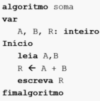

Algoritmos e Lógica de Programação
Profa. Maria Betânia Ricci Boer
• Objetivo do curso:
Saber programar computadores por meio de uma linguagem facilitadora e de amplo emprego no mercado, através do aprendizado de algoritmos.
• O que é lógica?
É o estudo filosófico do raciocínio válido, ou seja, qual argumento é válido ou racional e qual é falacioso, ou seja, falso.
• O que é Programação?
Na informática, programação é a ação de criar programas de computadores (softwares), isto é, definir um conjunto de instruções em uma linguagem especial para que o computador execute uma ou mais tarefas.
• Algoritmo:
“Um procedimento para resolver um problema, definido por uma sequência finita de passos executáveis, é denominado algoritmo.”
Existem diversas formas de representar um algoritmo. As mais utilizadas são: Fluxograma, Pseudo-código e Linguagem de Programação.
1 - Fluxograma:
Um fluxograma é uma descrição precisa e detalhada de um algoritmo, feita numa notação que combina elementos gráficos e textuais. (PEREIRA, 2010, p. 16)
2 - Pseudocódigo:
“O estilo de pseudocódigo é uma linguagem de projeto de programação e não uma linguagem de programação real. Assim sendo uma linguagem de projeto de programação não pode e não deve ter o mesmo rigor sintático que possui uma linguagem de programação formal (linguagem de programação real). Não há motivos para que o código escrito em LPP (Linguagem de Projeto de Programação) tenha, além de comandos escritos no idioma local, outras formas de apresentação de caracteres auxiliares.” (MANZANO;OLIVEIRA ,2011, p. 36)
2 - Linguagem de Programação Real:
Assim que o projeto de um programa de computador está concluído, é necessário transformá-lo em uma software. Para tanto, faz-se a tradução do projeto definido para uma linguagem de programação formal, aquela que é executada em um computador. Para a efetivação desse trabalho, é necessário fazer a escrita do código de programa em uma ferramenta de edição de textos para depois passar o programa por ferramentas de tradução, interpretação e compilação, conforme a necessidade. (MANZANO;OLIVEIRA ,2011, p. 39)
Exemplos:

Compiladores:
As ferramentas de compilação são programas que traduzem para uma linguagem de baixo nível (linguagem de máquina) um programa-fonte escrito em uma linguagem de alto nível. Ao fazer essa tradução, o programa fonte se torna um programa-objeto (escrito em linguagem de alto nível compatível com o processador em uso) e depois faz a ligação do programa-objeto com as rotinas de execução de programas do sistema operacional, tornando o programa um código executável.
(MANZANO;OLIVEIRA ,2011, p. 40)
Ex: C, C++, Pascal, Delphi, Fortran, Cobol, Objective C.
Exemplo de exercício feito em classe: